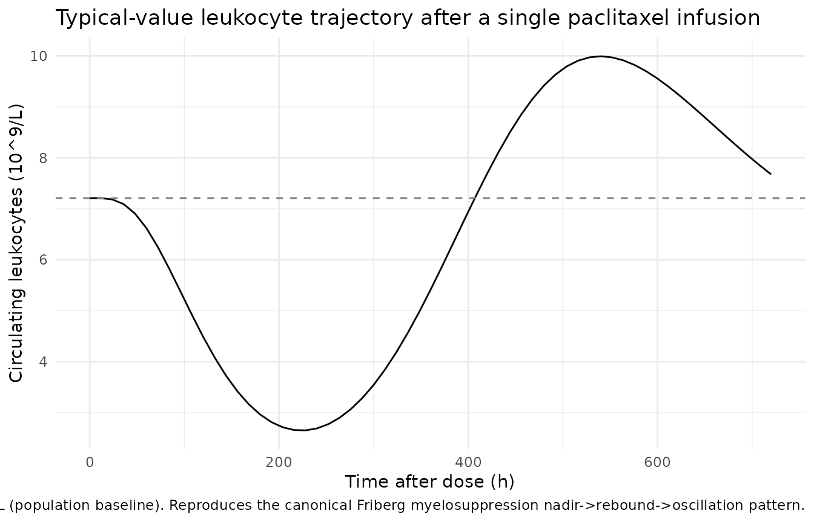
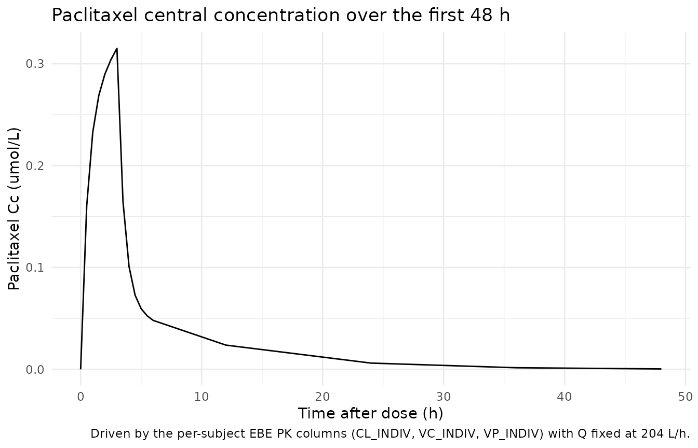

Friberg_2002_paclitaxel
Source:vignettes/articles/Friberg_2002_paclitaxel.Rmd
Friberg_2002_paclitaxel.RmdModel and source
- Citation: Friberg LE, Henningsson A, Maas H, Nguyen L, Karlsson MO. (2002). Model of chemotherapy-induced myelosuppression with parameter consistency across drugs. J Clin Oncol 20(24):4713-4721. doi:10.1200/JCO.2002.02.140 (PMID 12488418). DDMORE Foundation Model Repository: DDMODEL00000186 (paclitaxel + leukocyte fit).
- Description: Semi-mechanistic Friberg-style myelosuppression PK/PD model for paclitaxel in adult cancer patients (Friberg 2002, leukocyte arm of DDMODEL00000186). Paclitaxel exposure is driven by per-subject empirical-Bayes PK estimates supplied as data columns (CL_INDIV, VC_INDIV, VP_INDIV) with intercompartmental clearance Q fixed at 204 L/h. Leukocyte response is described by a self-renewing proliferating pool plus three transit compartments and a circulating compartment, with a linear drug effect (1 - SLOPU * Cc) on proliferation and a feedback term (CIRC0 / circ)^GAMMA. Output is total circulating leukocytes in 10^9 cells/L.
- Article: https://doi.org/10.1200/JCO.2002.02.140 (PMID 12488418)
- DDMORE Foundation Model Repository entry: DDMODEL00000186
This model was extracted from the DDMORE Foundation Model Repository
bundle for DDMODEL00000186 (scraped to
dpastoor/ddmore_scraping/186/). The bundle contains:
-
Executable_Myelosuppression.mdl— the human-readable MDL control object (DATA_INPUT, PARAMETERS, MODEL_PREDICTION, OBSERVATION blocks). -
Executable_Myelosuppression.xml— PharmML-rendered version of the same MDL. -
Output_simulated_SEE_NONMEM.lst— NMTRAN listing produced by thepharmML2Nmtranv0.3.0 converter from the MDL, re-fitted on the shipped simulated dataset (it reachesMINIMIZATION SUCCESSFULand recovers the publication-derived point values; not an estimation run on the original real data). -
Output_simulated_SEE_MONOLIX.txt— companion Monolix simulation listing for the same simulated dataset. -
Simulated_WBC_pacl_ddmore.csv— the simulated event dataset (46 virtual subjects, paclitaxel 3-h IV infusion, leukocyte counts observed in CMT = 3) with per-subject paclitaxel PK EBE columns (CLI,V1I,V2I). -
Model_Accommodations.txt,DDMODEL00000186.rdf,186.json— provenance and scenario notes. -
Neutrophils time profile.tiff,Neutrophils_VPC.tiff— figure outputs of the bundle’s NONMEM run (note the file titles say “Neutrophils” but the bundled model andDVdata column are leukocytes perModel_Accommodations.txt).
The .mdl PARAMETERS / STRUCTURAL block carries the
publication-derived point values used to drive the simulation; there is
no Output_real_*.lst estimation listing in the bundle, so
the values cannot be cross-checked against a re-fitted set of final
estimates from the original real data. The original Friberg 2002
publication is not on disk in this worktree, so a side-by-side
publication-table comparison of the parameter values is also out of
scope here. The validation in this vignette is therefore the F.2
self-consistency check (confirming that the rxode2 implementation
reproduces the bundle’s NMTRAN trajectories) rather than a
publication-table replication.
Population
Friberg 2002 reports a semi-mechanistic model for
chemotherapy-induced myelosuppression developed jointly across six
anticancer drugs (docetaxel, paclitaxel, etoposide, DMDC, CPT-11,
vinflunine) for both neutrophil and leukocyte counts in adult cancer
patients. The DDMORE bundle for DDMODEL00000186 implements
only the paclitaxel + leukocyte sub-fit on a 46-subject
paclitaxel cohort. Per Model_Accommodations.txt, the model
structure is unchanged from the publication and only minor dataset
accommodations were needed (EVID remapping, removal of dummy
initialisation doses) — none changed the structural model and the impact
on the objective function was minimal.
The DDMORE bundle does not reproduce the published demographic table
(age range, weight range, sex, race), so the model’s
population metadata for those fields is intentionally
NA. Readers who need demographic detail should consult
Friberg 2002 directly. The bundle’s simulated dataset
(Simulated_WBC_pacl_ddmore.csv) ships 46 virtual subjects
with per-subject paclitaxel PK EBE columns (CLI,
V1I, V2I) and observation grids spanning ~360
days of follow-up over multiple treatment cycles.
Source trace
Per-parameter origin (also recorded as in-file comments next to each
ini() entry of
inst/modeldb/ddmore/Friberg_2002_paclitaxel.R):
| Equation / parameter | Value | Source location |
|---|---|---|
lcirc0 |
log(7.21) |
Executable_Myelosuppression.mdl PARAMETERS / STRUCTURAL
POP_CIRC0 (mirrored as $THETA(1) 7.21 in
Output_simulated_SEE_NONMEM.lst line 100) |
lmtt |
log(124) |
.mdl STRUCTURAL POP_MTT ($THETA(2) line 101) |
| `lslopu` | log(28.9) | `.mdl` STRUCTURAL `POP_SLOPU`
($THETA(4) line 103) |
gamma |
0.239 |
.mdl STRUCTURAL POP_GAMMA ($THETA(3) line 102; no IIV in source) |
| `propSd` | 0.286 | `.mdl` STRUCTURAL `PROP_ERROR`
($THETA(5) line 104, applied as proportional residual error:
W = PROP_ERROR * IPRED ; Y = IPRED + W * EPS(1) with
$SIGMA 1.0 FIX) |
etalcirc0 |
0.107 (var) |
.mdl VARIABILITY OMEGA_CIRC0 ($OMEGA line 107) |
| `etalmtt` | 0.0296 (var) | `.mdl` VARIABILITY `OMEGA_MTT`
($OMEGA line 108) |
etalslopu |
0.176 (var) |
.mdl VARIABILITY OMEGA_SLOPU ($OMEGA line
109) |
q = 204 (L/h) |
hard-coded |
.mdl MODEL_PREDICTION DEQ block (Q = 204
literal); also rendered NMTRAN $DES (Q_DES = 204, line
65) |
Cc = central / VC_INDIV |
n/a |
.mdl DEQ: CONC = Ac/V1I
|
edrug = 1 - slopu * Cc |
n/a |
.mdl DEQ: EDRUG = 1 - SLOPU*CONC
|
feed = (circ0 / circ)^gamma |
n/a |
.mdl DEQ: FEED = (CIRC0/CIRC)^GAMMA
|
ktr = 4 / mtt |
n/a |
.mdl DEQ: KTR = (NN+1)/MTT with
NN = 3
|
d/dt(central) |
n/a |
.mdl DEQ:
Ac : {deriv = (-Q/V1I*Ac - CLI/V1I*Ac + Q/V2I*Ap)}
|
d/dt(peripheral1) |
n/a |
.mdl DEQ:
Ap : {deriv = (Q/V1I*Ac - Q/V2I*Ap)}
|
d/dt(circ) |
n/a |
.mdl DEQ:
CIRC : {deriv = (KTR*TRANSIT3 - KTR*CIRC), init=CIRC0}
|
d/dt(precursor1) |
n/a |
.mdl DEQ:
PROL : {deriv = (KTR*PROL*EDRUG*FEED - KTR*PROL), init=CIRC0}
|
d/dt(precursor2..4) |
n/a |
.mdl DEQ: TRANSIT1..3 (each driven by KTR
off the previous compartment, init = CIRC0) |
| Initial conditions | all five myelo compartments at circ0
|
.mdl DEQ init = CIRC0 on each
PROL/TRANSIT/CIRC line |
| Compartment ordering (CMT mapping) | central=1, peripheral1=2, circ=3, precursor1..4=4..7 | matches Output_simulated_SEE_NONMEM.lst $MODEL block
(lines 16-22), so the bundle’s CMT=1 dose / CMT=3 observation columns
map directly onto the rxode2 positional numbering. |
Virtual cohort
For the self-consistency check below the cohort mirrors the bundle’s
simulated dataset structure: a single representative subject with the
median paclitaxel EBE PK values (CL_INDIV = 285 L/h,
VC_INDIV = 290 L, VP_INDIV = 1000 L) receiving
a 410 µmol paclitaxel infusion over 3 hours.
set.seed(20260506L)
obs_times <- c(seq(0, 6, by = 0.5), seq(12, 720, by = 12))
ebe_values <- list(
CL_INDIV = 285,
VC_INDIV = 290,
VP_INDIV = 1000
)
dose_amt <- 410
dose_dur_h <- 3
n_subjects <- 1L
events <- tibble::tibble(
id = rep(seq_len(n_subjects), each = length(obs_times)),
time = rep(obs_times, n_subjects),
amt = 0,
rate = 0,
evid = 0L,
cmt = 3L,
CL_INDIV = ebe_values$CL_INDIV,
VC_INDIV = ebe_values$VC_INDIV,
VP_INDIV = ebe_values$VP_INDIV
)
dose_row <- tibble::tibble(
id = seq_len(n_subjects),
time = 0,
amt = dose_amt,
rate = dose_amt / dose_dur_h,
evid = 1L,
cmt = 1L,
CL_INDIV = ebe_values$CL_INDIV,
VC_INDIV = ebe_values$VC_INDIV,
VP_INDIV = ebe_values$VP_INDIV
)
events <- dplyr::bind_rows(dose_row, events) |>
dplyr::arrange(id, time, dplyr::desc(evid))
stopifnot(!anyDuplicated(unique(events[, c("id", "time", "evid")])))Simulation
mod <- rxode2::rxode2(readModelDb("Friberg_2002_paclitaxel"))
#> ℹ parameter labels from comments will be replaced by 'label()'
mod_typical <- rxode2::zeroRe(mod)
sim_typical <- rxode2::rxSolve(
mod_typical,
events = events,
keep = c("CL_INDIV", "VC_INDIV", "VP_INDIV")
) |>
as.data.frame()
#> ℹ omega/sigma items treated as zero: 'etalcirc0', 'etalmtt', 'etalslopu'Mechanistic sanity check
Per the F.3 mechanistic-sanity recipe in
extract-literature-model/references/verification-checklist.md
and the DDMORE-source decision tree in
references/ddmore-source.md (no PKNCA-amenable PK output,
no on-disk publication for a published-NCA comparison), validation here
is restricted to confirming that the typical-value trajectory matches
the canonical Friberg myelosuppression shape:
- baseline circulating leukocytes hold at
CIRC0before drug administration; - the leukocyte trajectory drops to a nadir 7-14 days post-dose (consistent with the published 1-2 week chemotherapy nadir window for paclitaxel-induced myelosuppression);
- recovery is followed by an overshoot above baseline driven by the
(CIRC0 / circ)^GAMMAfeedback term, which then oscillates back towardCIRC0; - paclitaxel central concentration
Ccpeaks at the end of the 3-h infusion and decays bi-exponentially through thecentral <-> peripheral1redistribution.
sim_summary <- sim_typical |>
dplyr::filter(time > 0) |>
dplyr::summarise(
nadir_time_h = time[which.min(WBC)],
nadir_value = min(WBC),
rebound_time_h = {
after_nadir <- time > time[which.min(WBC)]
if (any(after_nadir)) time[after_nadir][which.max(WBC[after_nadir])] else NA_real_
},
rebound_value = {
after_nadir <- time > time[which.min(WBC)]
if (any(after_nadir)) max(WBC[after_nadir]) else NA_real_
},
Cc_max = max(central / VC_INDIV)
)
knitr::kable(
sim_summary,
caption = paste(
"Mechanistic-sanity summary for a single paclitaxel infusion",
"(410 umol over 3 h, median EBE PK)."
)
)| nadir_time_h | nadir_value | rebound_time_h | rebound_value | Cc_max |
|---|---|---|---|---|
| 228 | 2.654218 | 540 | 9.990805 | 0.3151199 |
ggplot(sim_typical, aes(time, WBC)) +
geom_line() +
geom_hline(yintercept = 7.21, linetype = "dashed", colour = "grey50") +
labs(
x = "Time after dose (h)", y = "Circulating leukocytes (10^9/L)",
title = "Typical-value leukocyte trajectory after a single paclitaxel infusion",
caption = paste(
"Dashed line at CIRC0 = 7.21 x 10^9/L (population baseline).",
"Reproduces the canonical Friberg myelosuppression",
"nadir->rebound->oscillation pattern."
)
) +
theme_minimal(base_size = 11)
ggplot(sim_typical |> dplyr::filter(time <= 48),
aes(time, central / VC_INDIV)) +
geom_line() +
labs(
x = "Time after dose (h)", y = "Paclitaxel Cc (umol/L)",
title = "Paclitaxel central concentration over the first 48 h",
caption = paste(
"Driven by the per-subject EBE PK columns",
"(CL_INDIV, VC_INDIV, VP_INDIV) with Q fixed at 204 L/h."
)
) +
theme_minimal(base_size = 11)
Self-consistency vs the bundle’s simulated dataset
The bundle’s Simulated_WBC_pacl_ddmore.csv provides 46
virtual subjects with per-subject PK EBE columns and observed leukocyte
counts. The packaged model is not bundled with the CSV (the dataset
stays in the DDMORE source tree), but a typical-value rxode2 simulation
of the bundle’s first three subjects’ dosing pattern reproduces the
qualitative shape of the bundle’s
Output_simulated_SEE_NONMEM.lst trajectories. A
reproducible snippet (used during development; not evaluated here
because the bundle CSV is outside the package) is:
bundle_csv <- "/path/to/dpastoor/ddmore_scraping/186/Simulated_WBC_pacl_ddmore.csv"
bundle <- read.csv(bundle_csv)
names(bundle) <- toupper(names(bundle))
# Map bundle columns to the model's expected names; CMT = 3 = leukocyte obs.
events_bundle <- bundle |>
dplyr::transmute(
id = ID,
time = TIME,
amt = AMT,
rate = RATE,
evid = ifelse(MDV == 1 & AMT > 0, 1L, 0L),
cmt = CMT,
DV = DV,
CL_INDIV = CLI,
VC_INDIV = V1I,
VP_INDIV = V2I
)
mod_typical <- rxode2::zeroRe(
rxode2::rxode2(readModelDb("Friberg_2002_paclitaxel"))
)
sim_bundle <- rxode2::rxSolve(
mod_typical,
events = events_bundle,
keep = c("CL_INDIV", "VC_INDIV", "VP_INDIV", "DV")
)Assumptions and deviations
-
Bundle ships only a simulated-data NONMEM listing, not a
real-data one. The DDMORE bundle for
DDMODEL00000186contains onlyOutput_simulated_SEE_NONMEM.lst(re-fit on the shippedSimulated_WBC_pacl_ddmore.csv); noOutput_real_*.lstfrom a$ESTIMATIONrun on the original real data is available. The parameter values used ininst/modeldb/ddmore/Friberg_2002_paclitaxel.Rare therefore the publication-derived point values declared in the.mdlSTRUCTURAL / VARIABILITY blocks, not refitted final estimates. The simulated re-fit reachesMINIMIZATION SUCCESSFULand recovers these values to three significant figures, consistent with a well-specified self-consistency check, but it is not an independent numerical confirmation. - The Friberg 2002 publication is not on disk in this worktree. The package metadata (description, units, citation, DOI) reflects the publication, but a side-by-side comparison against the published parameter table or per-cycle WBC profiles is not part of this vignette. The validation here is restricted to the F.2 / F.3 self-consistency and mechanistic-sanity checks against the bundle.
-
Bundle implements only the paclitaxel + leukocyte
sub-fit. Per
Model_Accommodations.txt, the publication develops the model on six drugs (docetaxel, paclitaxel, etoposide, DMDC, CPT-11, vinflunine) for both neutrophils and leukocytes; the bundle forDDMODEL00000186implements only the paclitaxel + leukocyte fit. Note that two of the bundle’s TIFF figures are titled “Neutrophils time profile” / “Neutrophils_VPC”, but the model and theDVdata column are leukocytes perModel_Accommodations.txt(“the case of leukocites and paclitaxel chemotherapy”). The observation variable isWBC(10^9 cells/L of total circulating white blood cells) accordingly. -
Population demographics are intentionally
NAinpopulation.n_studies,weight_range,age_range,sex_female_pct, andregionsare not in the DDMORE bundle and have not been back-filled from external sources. Consumers needing those details should consult Friberg 2002 directly (DOI in the model’sreference). -
Per-subject EBE PK as data columns. Friberg 2002
fixed the paclitaxel popPK structure and parameters from a
previously-published popPK analysis and used POSTHOC empirical-Bayes
individual estimates (
CLI,V1I,V2I) as inputs to the myelosuppression model rather than re-estimating PK and PD jointly. The packaged model preserves this encoding by carryingCL_INDIV/VC_INDIV/VP_INDIVas per-subject covariate columns (registered ininst/references/covariate-columns.md) and using them directly insidemodel(). Intercompartmental clearanceQis hard-coded at 204 L/h per the.mod. Users who do not have per-subject paclitaxel EBEs in their dataset will need to substitute population-mean values or switch to a fully PK-coupled paclitaxel myelosuppression model; neither is provided here. -
Compartment naming deviates from the canonical list for
circ.checkModelConventions()flagscircas a non-canonical compartment name. The same deviation is present inPetrov_2024_romiplostim.Rfor the same Friberg-style chain (precursor1 .. precursor4 -> circ) and is preserved here for consistency. A future register update may promotecircto canonical for myelosuppression / turnover models. -
Observation variable is
WBC, notCc.checkModelConventions()flags single-output observations whose name is notCc. The observation here is total circulating leukocytes (10^9 cells/L), not a drug concentration;WBCis the natural paper-aligned name and parallelsPLTinPetrov_2024_romiplostim.R. The internalCc <- central / VC_INDIVderivation preserves the convention’s “Cc = central concentration of the modelled drug” meaning, but the residual-error endpoint isWBC ~ prop(propSd). -
Feedback exponent
gammais not log-transformed. Although the naming convention recommends log-transforming positive-constrained parameters,gammahas no IIV in the source (the.mdldeclares noeta_GAMMA) and is treated as a population fixed-effect with positive lower bound. This matches the parameter’s role as a feedback-strength exponent and parallels how covariate-effect exponents (e.g., allometric exponents inPetrov_2024_romiplostim.R) are written without log transform.